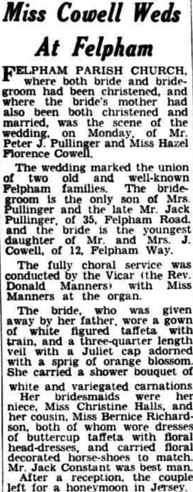
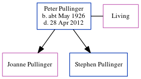

Peter John Bernard Pullinger cMay 1926 - 2012
[ Home ] | [ Calendar ] | [ Surnames Index ] | [ Errors ] | [ Family History ]Peter Pullinger, the husband of Hazel Florence Cowell (the second cousin on the mother's side of Nigel Horne), was born in Westhampnett, West Sussex, England c. May 19261,2 and married Hazel (with whom he had 2 children: Joanne and Stephen) at Felpham Parish Church, Felpham, Sussex, England on 4 Aug 19523. In 2003, he was living at 10 Neville Road, Bognor Regis, West Sussex, England4.
He died on 28 Apr 2012 in Bognor Regis1.
Citations
- England & Wales Deaths 2007-2020 - Findmypast
- England & Wales births 1837-2006 - Findmypast
- England & Wales marriages 1837-2008 - Findmypast
- UK, Electoral Registers, 2003-2010
Media
Bognor Regis Observer August 9, 1952

Bognor Regis Observer August 9, 1952
England & Wales marriages 1837-2008 - BMD/M/1952/3/PZ/000083/146
England & Wales births 1837-2006 - BMD/B/1926/2/AZ/001065/122
United Kingdom Deaths - BMD/D/MILLEN/001203933
Family Tree
Map
Generated by ged2site. Last updated on Jul 3, 2024
Known Issues
Listed in the residence for 2003, but spouse Hazel Cowell is not
1939 UK register information missing